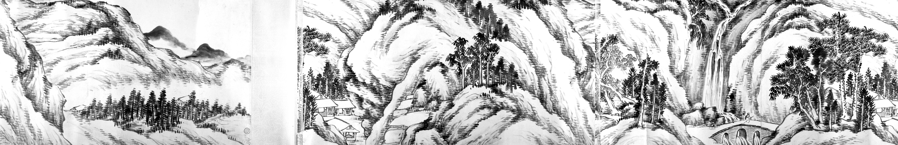

兼The fine brush小楷：细处
For emails and replies: short, exact, polite. It knows when one sentence is enough.写邮件和回复：短、准、客气。它知道什么时候一句话就够了。
Inkstone sits beside your draft like a good teacher: it grinds the ink, lays out the paper, and lets you make every stroke. Suggestions arrive faint and wet. Only the ones you keep turn black. 砚像一位好老师坐在你的稿子旁边：替你磨墨、铺纸，每一笔仍由你来写。它的建议先以淡墨出现，你留下的那些，才会干成浓墨。
Keep scrolling: a handscroll is read the way it was painted.继续往下滚：手卷要按画家落笔的顺序看。

Suggestions appear in pale, wet ink. Press Tab and watch them settle into the page; ignore them and they simply evaporate.建议用淡墨写出来。按 Tab，它慢慢干进纸里；不理它，它自己就散了。
Different drafts need different tips. Inkstone switches between them the way a calligrapher does: without thinking about it.不同的稿子要不同的笔锋。砚在它们之间切换，就像书法家换笔，不需要想。
For emails and replies: short, exact, polite. It knows when one sentence is enough.写邮件和回复：短、准、客气。它知道什么时候一句话就够了。
For essays and newsletters: it keeps rhythm across paragraphs so a long read still flows.写长文和周刊：它管段落之间的节奏，长文读起来也顺。
For first drafts: big strokes, no erasing. Get the mountain down, and the trees can wait.写初稿：大笔挥，不擦改。先把山画下来，树以后再补。
Free for your first hundred pages. The ink is on us.前一百页免费，墨我们来磨。